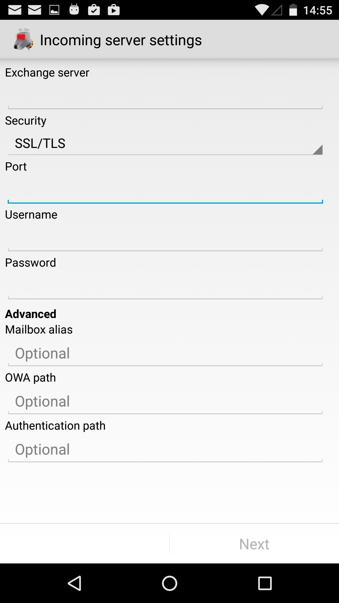

WebDAV (Exchange)
K-9 Mail supports using the WebDAV protocol to connect to Exchange servers. However, WebDAV is no longer supported by Exchange 2010 and newer, so K-9 Mail is not compatible with those Exchange versions.

Username: This is the user name that is required to authenticate to your Exchange server. It's usually of the form
domain\username.
Password: Here you enter the password to access your emails.
Exchange server: This is the hostname or IP address of your Exchange server. Note that this address must resolve to your mail server no matter what network you're connected to -- if you provide a name or IP that's only resolvable inside your private network, that's the only place you'll be able to pick up email. (If you don't understand the preceding, then you probably don't need to worry about it.) Some firewalls can also cause trouble here.
Security type: Select your security type, hopefully SSL (always).
Port: This is populated automatically. You shouldn't need to change this value.
Mailbox alias: Experience shows you should typically set this to your email address. Leaving it blank will use your username, which also works for some Exchange installations.
The following options are "advanced" options, and you should not need to change them from the defaults.
OWA path: Leave this field blank; defaults to /Exchange
Authentication path: Leave this field blank; defaults to
/exchweb/bin/auth/owaauth.dll
After the server settings are checked you can now continue to configure the outgoing server.